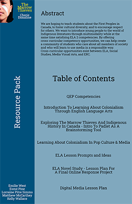

Teaching Philosophy
We are constantly surrounded by technology, whether it is by choice or not. Children are now being brought into a world where digital media is ubiquitous, and media companies are actively competing for their eyes. How can teachers ensure that students are aware of how the media attempts to influence their lives?
As a teacher, I strive to enable students to reflect not only on a mandated curriculum - but how class content has the ability to stimulate reflection and critical analysis of the world around them. A guiding idea in my teaching is that I want to be a “learning designer” rather than a traditional curriculum pusher (Kalantzis and Cope, 2010, p. 220). The idea that a learning designer can push the status-quo and redesign the classroom to make it work for them is central in my teaching style. I believe if you want your students to be creative and adaptive learners, you must embody all those ideals yourself. If teachers want students to be excited and engaged with the material, they must do the same. I believe when teachers are learning designers they are being accountable for their students' learning. At the same time, while being accountable for their students, teachers have the opportunity to become lifelong learners. The prospect of being a lifelong learner motivates me as a teacher, I am excited to learn new things, to continually read new books and to hear different ideas.
Based on who I am as a teacher, I believe that digital media and technology play an extraordinarily important role in the classroom. I believe the classroom must mirror the outside world; we cannot merely ignore technological tools as they have often done in the past. I believe that the classroom must utilize technology and digital media to explore multimodality as an accomplice to learning. A mode is defined by Roswell as a“unit of expression and representation” and Multimodality as “an orchestration of multiple modes to communicate, represent, and express meanings” (Roswell, 2013, p. 6). I think that using many different modes in the classroom enables students to learn through branching out their skills. For example, if you were teaching an English Language Arts class, you could teach Shakespeare straight from the book, but you could also interact with it much more creatively. The concept of multimodality will have an essential place in my classroom because it pushes students to think outside the box and interact with more creative options, like acting scenes out, recording and editing video, or creating a stage set/props. I believe that digital technology can make these ideas much more approachable, you could teach a simple course on GIMP/Photoshop and iMovie/Windows Movie Maker, which would enable students to have creative toolsets.
“Youth must become media literate. When they engage with media— either as consumers or producers—they need to have the skills to ask questions about the construction and dissemination of particular media artifacts. What biases are embedded in the artifact? How did the creator intend for an audience to interpret that artifact, and what are the consequences of that interpretation?” (boyd, 2014, p. 180-181).
Alongside digital tools that can be taught to students, these creative avenues are a great opportunity to teach students how to be media literate. If students have no concept of how things are created they are simply consumers. In a sample lesson plan I created for my media inquiry project, I proposed that students learn how to make propaganda posters, create social media accounts for characters and utilize mapping technology to track the protagonist’s steps. My media inquiry project was for The Marrow Thieves by Cherie Dimaline, which is a novel that is focused on a dystopian Indigenous lens, that is actively taught across the country at the secondary level. These activities are not only a way of utilizing editing software but have pedagogical value in critiquing oppressive values in society and the power of mass / social media. While keeping in mind the contemporary Canadian landscape and current events such as the ongoing Wet'suwet'en Conflict, these activities work alongside current events to contextualize what it means to be media literate. If my students are watching the news about an issue that affects indigenous peoples, my goal is for them to be able to critically analyze how the story is being portrayed and what it means for those peoples.
To conclude, my beliefs in pushing the limits of curriculum and lifelong learning strongly accompany the utilization of digital technologies in the classroom. I believe that through providing students with creative digital outlets they are not only able to better understand the media at hand but are put in a position to develop a strong sense of media literacy.
References
boyd, danah (2014). It's Complicated: The Social Lives of Networked Teens. New Haven; London: Yale University Press. Retrieved July 16, 2020, from www.jstor.org/stable/j.ctt5vm5gk
Kalantzis, M., & Cope, B. (2010). The Teacher as Designer: Pedagogy in the New Media Age. E-Learning and Digital Media, 7(3), 200–222. https://doi.org/10.2304/elea.2010.7.3.200
Rowsell, J. (2013). Working with Multimodality. London: Routledge, https://doi.org/10.4324/9780203071953
Introduction to Shakespeare WebQuest
Fall 2021
McGill Lesson Plan
PC1: Allowing students to critically interpret the figure of Shakespeare, and England in the Renaissance period.
PC6: The class is structured to enable different types of learners to have multiple opportunities to analyze. The multimodal format exists to promote student learning.
PC7: How using the Internet and individual research can promote learning. How using plays, No Fear Shakespeare and internet videos of the same text can enable diverse learners to approach and understand literacy in their preferred way.

Indigenous Media in the ELA Classroom: The Marrow Thieves
Summer 2020
